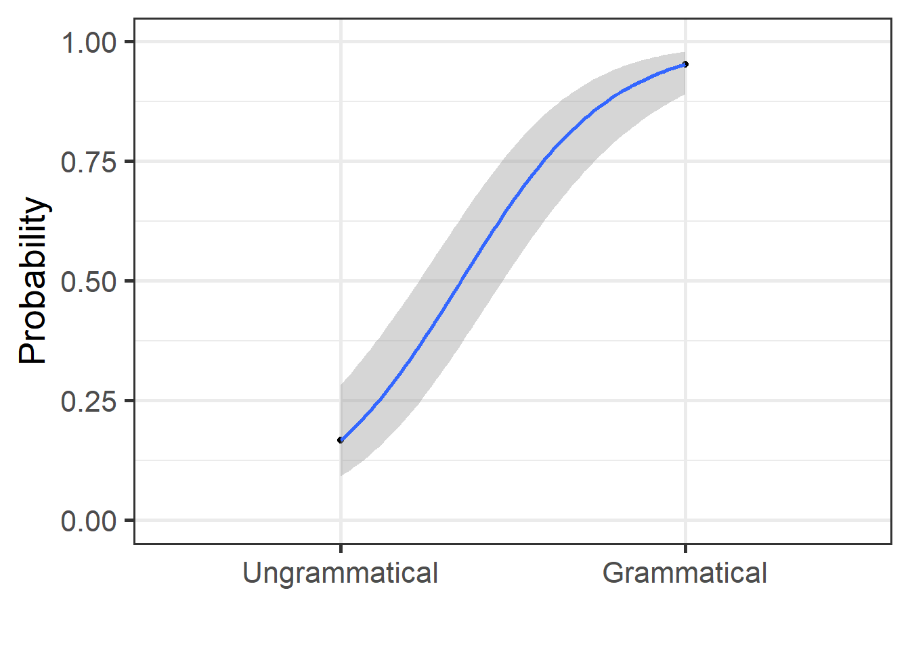
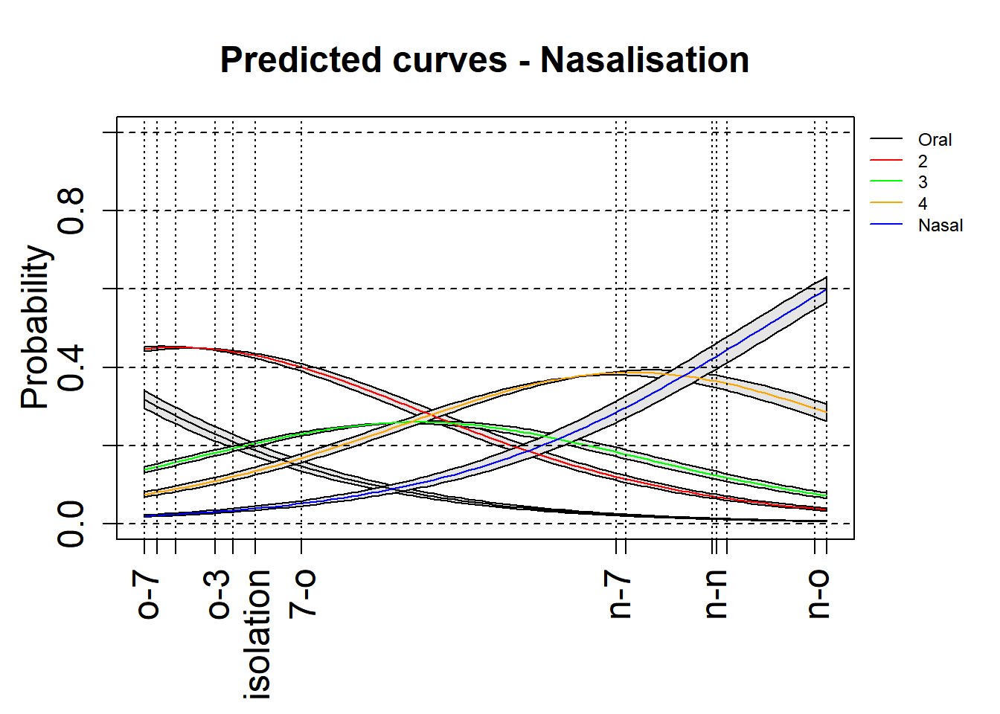
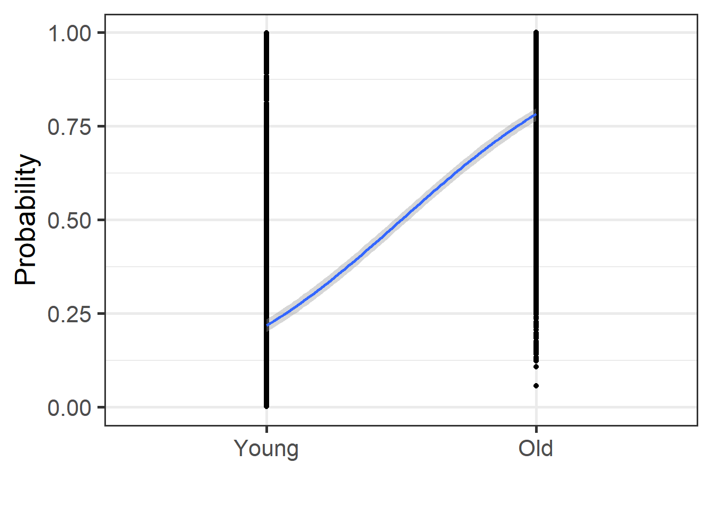
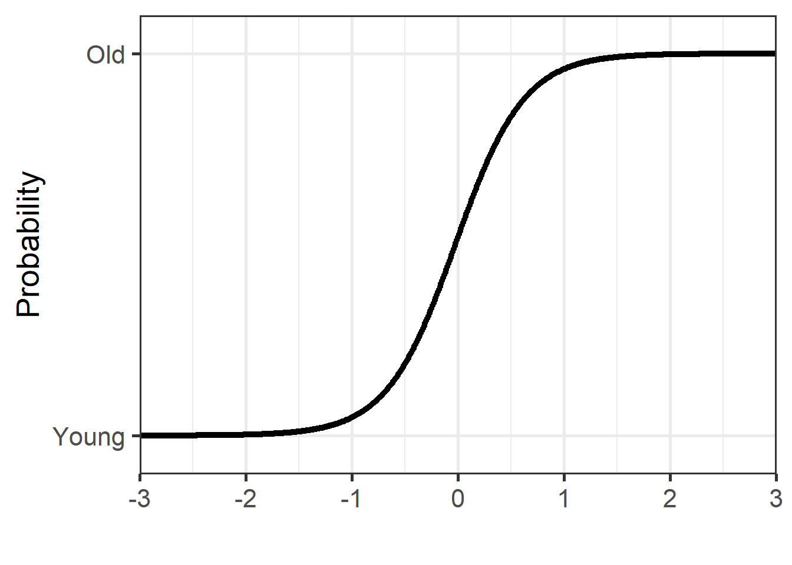

2.6 Generalised Linear Models
Here we will look at an example when the outcome is binary. This simulated data is structured as follows. We asked one participant to listen to 165 sentences, and to judge whether these are “grammatical” or “ungrammatical”. There were 105 sentences that were “grammatical” and 60 “ungrammatical”. Responses varied, with 110 “yes” responses and 55 “no” responses, spread across the grammatical.
This fictitious example can apply in any other situation. Let’s think Geography: 165 lands: 105 “flat” and 60 “non-flat”, etc. This applies to any case where you need to “categorise” the outcome into two groups.
2.6.1 Load and summaries
Let’s create this dataset from scratch (you can load the “grammatical.csv file as well) and do some basic summaries
grammatical <- as.data.frame(
cbind("grammaticality" = c("grammatical" = rep("grammatical", 105),
"ungrammatical" = rep("ungrammatical", 60)),
"response" = c("yes" = rep("yes", 100),
"no" = rep("no", 5),
"yes" = rep("yes", 10),
"no" = rep("no", 50))),
row.names = FALSE)
grammatical %>%
head(20)## grammaticality response
## 1 grammatical yes
## 2 grammatical yes
## 3 grammatical yes
## 4 grammatical yes
## 5 grammatical yes
## 6 grammatical yes
## 7 grammatical yes
## 8 grammatical yes
## 9 grammatical yes
## 10 grammatical yes
## 11 grammatical yes
## 12 grammatical yes
## 13 grammatical yes
## 14 grammatical yes
## 15 grammatical yes
## 16 grammatical yes
## 17 grammatical yes
## 18 grammatical yes
## 19 grammatical yes
## 20 grammatical yes## 'data.frame': 165 obs. of 2 variables:
## $ grammaticality: chr "grammatical" "grammatical" "grammatical" "grammatical" ...
## $ response : chr "yes" "yes" "yes" "yes" ...## grammaticality response
## 1 grammatical yes
## 2 grammatical yes
## 3 grammatical yes
## 4 grammatical yes
## 5 grammatical yes
## 6 grammatical yes##
## grammatical ungrammatical
## no 5 50
## yes 100 102.6.2 GLM - Categorical predictors
Let’s run a first GLM (Generalised Linear Model). A GLM uses a special family “binomial” as it assumes the outcome has a binomial distribution. In general, results from a Logistic Regression are close to what we get from SDT (see above).
To run the results, we will change the reference level for both response and grammaticality. The basic assumption about GLM is that we start with our reference level being the “no” responses to the “ungrammatical” category. Any changes to this reference will be seen in the coefficients as “yes” responses to the “grammatical” category.
2.6.2.1 Model estimation and results
The results below show the logodds for our model.
grammatical <- grammatical %>%
mutate(response = factor(response, levels = c("no", "yes")),
grammaticality = factor(grammaticality, levels = c("ungrammatical", "grammatical")))
grammatical %>%
group_by(grammaticality, response) %>%
table()## response
## grammaticality no yes
## ungrammatical 50 10
## grammatical 5 100mdl.glm <- grammatical %>%
glm(response ~ grammaticality, data = ., family = binomial)
summary(mdl.glm)##
## Call:
## glm(formula = response ~ grammaticality, family = binomial, data = .)
##
## Coefficients:
## Estimate Std. Error z value Pr(>|z|)
## (Intercept) -1.6094 0.3464 -4.646 3.38e-06 ***
## grammaticalitygrammatical 4.6052 0.5744 8.017 1.08e-15 ***
## ---
## Signif. codes: 0 '***' 0.001 '**' 0.01 '*' 0.05 '.' 0.1 ' ' 1
##
## (Dispersion parameter for binomial family taken to be 1)
##
## Null deviance: 210.050 on 164 degrees of freedom
## Residual deviance: 94.271 on 163 degrees of freedom
## AIC: 98.271
##
## Number of Fisher Scoring iterations: 5## # A tibble: 2 × 2
## term estimate
## <chr> <dbl>
## 1 (Intercept) -1.61
## 2 grammaticalitygrammatical 4.612.6.2.2 Model’s fit
print(tab_model(mdl.glm, file = paste0("outputs/mdl.glm.html")))
htmltools::includeHTML("outputs/mdl.glm.html")| response | |||
|---|---|---|---|
| Predictors | Odds Ratios | CI | p |
| (Intercept) | 0.20 | 0.10 – 0.38 | <0.001 |
| grammaticality [grammatical] |
100.00 | 35.29 – 344.77 | <0.001 |
| Observations | 165 | ||
| R2 Tjur | 0.643 | ||
The results show that for one unit increase in the response (i.e., from no to yes), the logodds of being “grammatical” is increased by 4.6051702 (the intercept shows that when the response is “no”, the logodds are -1.6094379). The actual logodds for the response “yes” to grammatical is 2.9957323
2.6.2.3 Logodds to Odd ratios
Logodds can be modified to talk about the odds of an event. For our model above, the odds of “grammatical” receiving a “no” response is a mere 0.2; the odds of “grammatical” to receive a “yes” is a 20; i.e., 20 times more likely
## [1] 0.2## [1] 202.6.2.4 LogOdds to proportions
If you want to talk about the percentage “accuracy” of our model, then we can transform our loggodds into proportions. This shows that the proportion of “grammatical” receiving a “yes” response increases by 99% (or 95% based on our “true” coefficients)
## [1] 0.1666667## [1] 0.9523812.6.2.5 Plotting
grammatical <- grammatical %>%
mutate(prob = predict(mdl.glm, type = "response"))
grammatical %>%
ggplot(aes(x = as.numeric(grammaticality), y = prob)) +
geom_point() +
geom_smooth(method = "glm",
method.args = list(family = "binomial"),
se = T) + theme_bw(base_size = 20)+
labs(y = "Probability", x = "")+
coord_cartesian(ylim = c(0,1))+
scale_x_discrete(limits = c("Ungrammatical", "Grammatical"))
2.6.3 GLM - Numeric predictors
In this example, we will run a GLM model using a similar technique to
that used in Al-Tamimi (2017) and Baumann & Winter (2018). We use
the package LanguageR and the dataset English.
In the model above, we used the equation as lm(RTlexdec ~ AgeSubject).
We were interested in examining the impact of age of subject on reaction
time in a lexical decision task. In this section, we are interested in
understanding how reaction time allows to differentiate the participants
based on their age. We use AgeSubject as our outcome and RTlexdec as
our predictor using the equation glm(AgeSubject ~ RTlexdec). We usually
can use RTlexdec as is, but due to a possible quasi separation and the
fact that we may want to compare coefficients using multiple acoustic
metrics, we will z-score our predictor. We run below two models, with
and without z-scoring
For the glm model, we need to specify family = "binomial".
2.6.3.1 Without z-scoring of predictor
2.6.3.1.1 Model estimation
mdl.glm2 <- english2 %>%
glm(AgeSubject ~ RTlexdec, data = ., family = "binomial")
tidy(mdl.glm2) %>%
select(term, estimate) %>%
mutate(estimate = round(estimate, 3))## # A tibble: 2 × 2
## term estimate
## <chr> <dbl>
## 1 (Intercept) -129.
## 2 RTlexdec 19.62.6.3.1.2 Model’s fit
print(tab_model(mdl.glm2, file = paste0("outputs/mdl.glm2.html")))
htmltools::includeHTML("outputs/mdl.glm2.html")| Age Subject | |||
|---|---|---|---|
| Predictors | Odds Ratios | CI | p |
| (Intercept) | 0.00 | 0.00 – 0.00 | <0.001 |
| RTlexdec | 341800476.21 | 112341564.77 – 1093796674.90 | <0.001 |
| Observations | 4568 | ||
| R2 Tjur | 0.565 | ||
2.6.3.1.3 LogOdds to proportions
If you want to talk about the percentage “accuracy” of our model, then we can transform our loggodds into proportions.
## [1] 1.368844e-56## [1] 4.678715e-482.6.3.1.4 Plotting
english2 <- english2 %>%
mutate(prob = predict(mdl.glm2, type = "response"))
english2 %>%
ggplot(aes(x = as.numeric(AgeSubject), y = prob)) +
geom_point() +
geom_smooth(method = "glm",
method.args = list(family = "binomial"),
se = T) + theme_bw(base_size = 20)+
labs(y = "Probability", x = "")+
coord_cartesian(ylim = c(0,1))+
scale_x_discrete(limits = c("Young", "Old"))
The plot above show how the two groups differ using a glm. The results point to an overall increase in the proportion of reaction time when moving from the “Young” to the “Old” group. Let’s use z-scoring next
2.6.3.2 With z-scoring of predictor
2.6.3.2.1 Model estimation
english2 <- english2 %>%
mutate(`RTlexdec_z` = scale(RTlexdec, center = TRUE, scale = TRUE))
english2['RTlexdec_z'] <- as.data.frame(scale(english2$RTlexdec))
mdl.glm3 <- english2 %>%
glm(AgeSubject ~ RTlexdec_z, data = ., family = "binomial")
tidy(mdl.glm3) %>%
select(term, estimate) %>%
mutate(estimate = round(estimate, 3))## # A tibble: 2 × 2
## term estimate
## <chr> <dbl>
## 1 (Intercept) 0.077
## 2 RTlexdec_z 3.082.6.3.2.2 Model’s fit
print(tab_model(mdl.glm3, file = paste0("outputs/mdl.glm3.html")))
htmltools::includeHTML("outputs/mdl.glm3.html")| Age Subject | |||
|---|---|---|---|
| Predictors | Odds Ratios | CI | p |
| (Intercept) | 1.08 | 0.99 – 1.18 | 0.086 |
| RTlexdec z | 21.83 | 18.34 – 26.20 | <0.001 |
| Observations | 4568 | ||
| R2 Tjur | 0.565 | ||
2.6.3.2.3 LogOdds to proportions
If you want to talk about the percentage “accuracy” of our model, then we can transform our loggodds into proportions.
## [1] 0.5192147## [1] 0.9593132.6.3.2.4 Plotting
2.6.3.2.4.1 Normal
english2 <- english2 %>%
mutate(prob = predict(mdl.glm3, type = "response"))
english2 %>%
ggplot(aes(x = as.numeric(AgeSubject), y = prob)) +
geom_point() +
geom_smooth(method = "glm",
method.args = list(family = "binomial"),
se = T) + theme_bw(base_size = 20)+
labs(y = "Probability", x = "")+
coord_cartesian(ylim = c(0,1))+
scale_x_discrete(limits = c("Young", "Old"))
We obtain the exact same plots, but the model estimations are different. Let’s use another type of predictions
2.6.3.2.4.2 z-scores
z_vals <- seq(-3, 3, 0.01)
dfPredNew <- data.frame(RTlexdec_z = z_vals)
## store the predicted probabilities for each value of RTlexdec_z
pp <- cbind(dfPredNew, prob = predict(mdl.glm3, newdata = dfPredNew, type = "response"))
pp %>%
ggplot(aes(x = RTlexdec_z, y = prob)) +
geom_point() +
theme_bw(base_size = 20)+
labs(y = "Probability", x = "") +
coord_cartesian(ylim = c(-0.1, 1.1), expand = FALSE) +
scale_y_discrete(limits = c(0,1), labels = c("Young", "Old")) +
scale_x_continuous(breaks = c(-3, -2, -1, 0, 1, 2, 3))
We obtain the exact same plots, but the model estimations are different.
2.6.4 Signal Detection Theory
2.6.4.1 Rationale
We are generally interested in performance, i.e., whether the we have “accurately” categorised the outcome or not and at the same time want to evaluate our biases in responses. When deciding on categories, we are usually biased in our selection.
Let’s ask the question: How many of you have a Mac laptop and how many a Windows laptop? For those with a Mac, what was the main reason for choosing it? Are you biased in anyway by your decision?
To correct for these biases, we use some variants from Signal Detection Theory to obtain the true estimates without being influenced by the biases.
2.6.4.2 Running stats
Let’s do some stats on this
| Yes | No | Total | |
|---|---|---|---|
| Grammatical (Yes Actual) | TP = 100 | FN = 5 | (Yes Actual) 105 |
| Ungrammatical (No Actual) | FP = 10 | TN = 50 | (No Actual) 60 |
| Total | (Yes Response) 110 | (No Response) 55 | 165 |
2.6.4.3 Below we obtain multiple measures
2.6.4.3.1 TP, FP, FN, TN
TP = True Positive (Hit); FP = False Positive; FN = False Negative; TN = True Negative
TP <- nrow(grammatical %>%
filter(grammaticality == "grammatical" &
response == "yes"))
FN <- nrow(grammatical %>%
filter(grammaticality == "grammatical" &
response == "no"))
FP <- nrow(grammatical %>%
filter(grammaticality == "ungrammatical" &
response == "yes"))
TN <- nrow(grammatical %>%
filter(grammaticality == "ungrammatical" &
response == "no"))
TP## [1] 100## [1] 5## [1] 10## [1] 502.6.4.3.2 Accuracy, Error, Sensitivity, Specificity, Precision, etc.
2.6.4.3.2.2 Sensitivity, Specificity, Precision, etc.
# When stimulus = yes, how many times response = yes?
TP/(TP+FN) # also True Positive Rate or Specificity## [1] 0.952381## [1] 0.1666667## [1] 0.8333333## [1] 0.90909092.6.4.3.2.3 STD measures
We can get various measures from Signal Detection Theory. using the
package psycho.
dprime (or the sensitivity index)
beta (bias criterion, 0-1, lower = increase in “yes”)
Aprime (estimate of discriminability, 0-1, 1 = good discrimination; 0 at chance)
bppd (b prime prime d, -1 to 1; 0 = no bias, negative = tendency to respond “yes”, positive = tendency to respond “no”)
c (index of bias, equals to SD)
See here for more details
## $dprime
## [1] 2.635813
##
## $beta
## [1] 0.3970026
##
## $aprime
## [1] 0.9419643
##
## $bppd
## [1] -0.5076923
##
## $c
## [1] -0.3504848The most important from above, is d-prime. This is modelling the difference between the rate of “True Positive” responses and “False Positive” responses in standard unit (or z-scores). The formula can be written as:
d' (d prime) = Z(True Positive Rate) - Z(False Positive Rate)
2.6.4.4 GLM and d prime
The values obtained here match those obtained from SDT. For d prime, the difference stems from the use of the logit variant of the Binomial family. By using a probit variant, one obtains the same values (see here for more details). A probit variant models the z-score differences in the outcome and is evaluated in change in 1-standard unit. This is modelling the change from “ungrammatical” “no” responses into “grammatical” “yes” responses in z-scores. The same conceptual underpinnings of d-prime from Signal Detection Theory.
## d prime
psycho::dprime(TP, FP, FN, TN,
n_targets = TP+FN,
n_distractors = FP+TN,
adjust=F)$dprime## [1] 2.635813## GLM with probit
coef(glm(response ~ grammaticality, data = grammatical, family = binomial(probit)))[2]## grammaticalityungrammatical
## 2.6358132.6.4.5 GLM as a classification tool
The code below demonstrates the links between our GLM model and what we had obtained above from SDT. The predictions’ table shows that our GLM was successful at obtaining prediction that are identical to our initial data setup. Look at the table here and the table above. Once we have created our table of outcome, we can compute percent correct, the specificity, the sensitivity, the Kappa score, etc.. this yields the actual value with the SD that is related to variations in responses.
## predict(mdl.glm)>0.5 is identical to
## predict(glm(response~grammaticality,data=grammatical,family = binomial),type="response")
grammatical <- grammatical %>%
mutate(response = factor(response, levels = c("yes", "no")),
grammaticality = factor(grammaticality, levels = c("grammatical", "ungrammatical")))
mdl.glm.C <- grammatical %>%
glm(response ~ grammaticality, data = .,family = binomial)
tbl.glm <- table(grammatical$response, predict(mdl.glm.C, type = "response")>0.5)
colnames(tbl.glm) <- c("grammatical", "ungrammatical")
tbl.glm##
## grammatical ungrammatical
## yes 100 10
## no 5 50## PCC PCC.sd
## 1 0.9090909 0.0224484## specificity specificity.sd
## 1 0.8333333 0.04851854## sensitivity sensitivity.sd
## 1 0.952381 0.02088233If you look at the results from SDT above, these results are the same as the following
Accuracy: (TP+TN)/Total (0.9090909)
True Positive Rate (or Specificity) TP/(TP+FN) (0.952381)
True Negative Rate (or Sensitivity) TN/(FP+TN) (0.8333333)